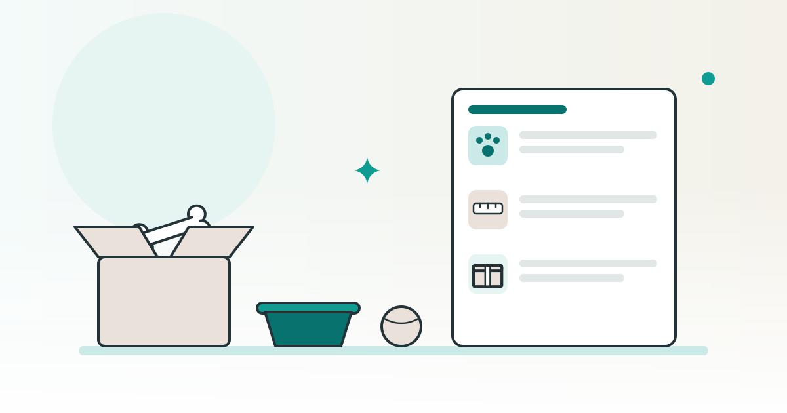

SHOPKIT コラム
ペット用品の商品説明を書く使う場面・素材・同梱物を分ける

ペット用品の商品説明は、確認できた商品の事実を、使う場面・素材や大きさ・届く物に分けて書きます。販売元の資料と現物に対応させ、写真を見た印象だけで効き目や使える範囲を付け足さないようにします。ペット用のマットや布製の用品などを扱うお店に向けて、情報をそろえて文章へ移す方法を紹介します。
この記事は、完成品のネットショップを販売している SHOPKIT が書いています。
この記事で分かること
- 商品ごとに、資料で確認した情報と質問が必要な情報を分ける方法
- 使用場面・素材・お手入れ・同梱物を別々に伝える組み立て方
- 写真や資料と、掲載する説明文を照らし合わせる手順
商品説明は、販売元の資料で確かめられる事実から書く
最初に文章を作るより、根拠になる情報を商品ごとに集めます。商品名と品番を決め、販売元の仕様書、商品に付いた表示、取扱説明、現物を対応させます。色や形が似た別商品の資料を混ぜないことが出発点です。
ペット用のマットを例にすると、表面の生地と中に入っている素材、底の部分は、別の情報になることがあります。「素材」の一言へまとめず、どの部分についての説明かを記録します。部品やカバーを組み合わせる商品なら、販売する組み合わせと資料をそろえます。
| 集める情報 | 確認する資料や現物 | 文章へ移すときの分け方 |
|---|---|---|
| 商品を特定する情報 | 商品名、品番、色や形の違い | 別の商品や組み合わせの説明を混ぜない |
| 使う目的や場所 | 販売元が示した用途、使用方法 | 動物への効果とは別の、使う場面として書く |
| 素材や構造 | 部分ごとの素材名、取扱説明、現物 | 表面・中の素材・底など、説明する部分を示す |
| 届く物 | 販売する本体、部品、付属品の一覧 | 使用場面の小物から切り離して書く |
資料にある言葉を、意味を変えて短くしないようにします。ある部品だけの説明を商品全体へ広げたり、特定の使い方の条件を省いたりすると、元の資料と違う内容になります。条件を付けて案内されている項目は、その条件も一緒に記録します。
資料と現物が違って見える箇所は、説明文を整える前に販売元へ戻します。見た目から素材名を決めたり、似た商品で使われていた表現を借りたりせず、確認する内容として分けておきます。
使う場面と、セットに含まれる物は別の段落に分ける
「どう使うか」と「何が届くか」は、それぞれ見出しを付けて読める形にします。ペットが用品を使う写真には、別のマット、かご、家具などが一緒に写ることがあります。使用場面を説明する文章だけでは、写真のどこまでが販売対象なのか分からない場合があります。
使う場面の段落では、確認済みの用途を、置く場所や使う動作と結び付けます。たとえばマットの説明なら、どの場所で使うための商品かを、販売元の用途と対応させます。その段落で動物の性格や身体への作用まで説明しないようにします。
| 分けて書く段落 | 確認後に入れる内容 | 写真と照合する所 |
|---|---|---|
| 使う場面 | 商品に対応する場所と使い方 | 実際の商品と、使用条件が一致するか |
| セット内容 | 届く本体、取り外す部品、付属品 | 写っている物をすべて含むように見えないか |
| 別に用意する物 | 使用に必要で、商品には含まれない物 | 販売対象と撮影用の小物が区別できるか |
| 選べる組み合わせ | 色や形など、購入時に選ぶ内容 | 選択した内容と掲載写真が対応するか |
本体とカバーを一緒に撮っていても、販売するのがカバーだけなら、その違いが見出しとセット内容で分かるようにします。写真の下に説明を足すだけでなく、商品名や選ぶ欄も同じ内容を指しているかを照合します。
届く物を決めた後の梱包作業は別の手順として持ち、ここでは商品ページに書く販売対象の一覧までをそろえます。
写真の見せ方もそろえたい方は、1枚目で販売する物を伝え、続く写真で大きさや素材を補う役割の分け方を整理した記事も参考にしてください。
関連：ネットショップの商品写真の撮り方｜一覧でそろって見える条件と使えない画像
素材・大きさ・お手入れは、部分ごとの項目にそろえる
素材とお手入れは、どの部分に当てはまるかを明記します。カバーに書かれた方法を、中の素材や部品にも使えると読み替えないようにします。取り外せる部分があるなら、その部分についての案内か、全体についての案内かを分けます。
| 掲載する項目 | 用意する情報 | 説明のそろえ方 |
|---|---|---|
| 素材 | 資料で確認した素材名と該当する部分 | 本体、カバー、中の素材、部品を分ける |
| 大きさ | 商品の実寸と測った位置 | 外側の寸法か、内側の使える部分かを区別する |
| お手入れ | 販売元の取扱説明にある方法と条件 | どの部分を、どの条件で手入れするかを書く |
| 同梱物 | 販売する組み合わせの本体と付属品 | 使用例の小物や別売品から分ける |
| 使用上の注意 | 資料に示された使用条件や注意事項 | 短くする際も、条件を落とさず対応を残す |
大きさは、現物を測った位置と単位を記録し、その値を説明へ移します。服の採寸や在庫全体の管理まで広げず、説明する商品を見分けるために必要な情報を載せます。
消費者庁の製品別品質表示の手引きには、製品の区分ごとの案内があります。家庭用品品質表示法の対象となるかや、必要な表示は、扱う製品の区分と資料を照らして所管の窓口で確かめます。ペット向けという呼び方だけで、同じ表示をすべての商品へ当てはめないようにします。
販売ページの説明文を用意する作業と、法令で必要な商品そのものの表示を確かめる作業は、別々に残します。説明文に素材の欄を設けたことだけで、必要な表示が全部そろったと扱わないようにします。
効き目や安全の説明を、素材名や印象から付け足さない
素材や使い方の情報から、動物の健康や安全への説明を作らない方針にします。柔らかく見えることや、特定の動物が使っている写真だけでは、どの動物にも適していることまでは確認できません。資料で分かる商品の構造や使用条件を、その範囲で伝えます。
消費者庁の優良誤認の説明は、商品の内容を実物よりも大幅によく見せ、購入の判断を不当に誘うような表示などを禁じています。誤って表示した場合も、規制の対象になることがあると説明しています。元の資料があるかだけでなく、掲載する文章がその内容を超えていないかを見ます。
たとえば、ある部分に使われている素材を示す説明と、壊れにくさを示す説明は別です。使っている素材名を確認できても、耐久性を示す資料までそろったことにはなりません。強さや効き目を表す文章を考えたときは、どの資料のどの条件に対応するかを先に確認します。
写真に写った使用例についても、その場面から使える範囲を広げないようにします。犬と猫で同じ使い方ができるかや、使う動物の身体に合うかは、写真の印象だけで補う情報にしません。
猫向けの商品も扱いたい方は、犬用との共用を決める前に対象・寸法・形・用途を確かめ、説明できる役割から品ぞろえを考える記事も参考にしてください。
関連：猫服・猫用品のネットショップを始める｜犬服との違いと品ぞろえ
足りない情報は、部分と条件を示した質問に変える
確認することを、販売元が答えられる具体的な問いへ分けます。「商品について詳しく教えてほしい」だけでは、どこが分からないかが伝わりません。商品名と品番、資料の場所を示し、素材、部品、手入れなどの項目ごとに質問します。
| 分からない項目 | 質問の形の例 | 返答後に照らす所 |
|---|---|---|
| 部分ごとの素材 | 本体・カバー・中の素材は、それぞれ何ですか | 回答が対象商品のどの部分か |
| 同梱物 | 写真の中で、販売セットに含む物と含まない物はどれですか | 販売する組み合わせと写真との対応 |
| お手入れ | この方法で手入れできるのは、取り外した部分ですか、商品全体ですか | 方法を使える部分と条件 |
| 大きさの案内 | 記載した寸法は、商品のどの位置からどの位置を測った値ですか | 実物と測定箇所の説明 |
返答を受けたら、確認した日と資料を残して、素材の表、使用場面、同梱物の説明へ反映します。説明の範囲がはっきりしない返答は、自分で意味を広げず、どの部分や条件かを聞き直します。
消費者庁の通信販売のガイドは、広告で商品の品質などを実物から大きく離して説明し、又は実際より著しくよいものと受け取らせる表示を禁じると案内しています。資料が足りない項目を、販売用の言葉だけで補わないようにします。
お店を買って始めるときは、説明文と商品資料を照らし直す
受け取った文章も、どの商品のどの資料に対応するかを見ます。素材の名前、使う場面、届く物を分けて読み、付属品や別売品の扱いが写真と一致するかを確認します。元の資料が分からない箇所は、文章を引き継ぐ前に質問へ戻します。
SHOPKITの2026年10月15日時点のサービスページは、商品と店舗を整えて販売を始める準備をした状態でお渡しすると案内しています。お渡しする内容には、お店一式と仕入れの情報、運営・集客のマニュアルが含まれます。出典：お渡しするもの。
商品ごとの説明文や、元にした仕様書をどこまで受け取れるかは、購入前に資料を見ながら質問します。仕組みを用意して始める場合も、販売する内容を自分で説明できるよう、事実と根拠の対応を確かめます。
扱うジャンルから考えたい方は、寸法や使い方を説明できるか、仕入れ先へ質問できるか、配送まで考えられるかを選ぶ軸にした記事も参考にしてください。
関連：ネットショップで何を売る？ペット用品から考えるジャンルの選び方
よくある質問
ペット用品の素材名は、見た目で判断して書いてもよいですか？
見た目から素材名を決めず、対象商品の資料と表示で確認します。本体、カバー、中の素材などを分け、確認できない部分は販売元への質問として残します。
ペット用品の商品写真に写る小物と、販売するセット内容は説明文でどう区別しますか？
使う場面とセット内容を別の段落にし、届く物と含まれない物を示します。商品名や購入時に選ぶ内容も同じ販売対象を指しているかを照合します。
カバーのお手入れ方法を、ペット用品全体の方法として載せられますか？
対象の部分と条件を確認します。取り外したカバーについての方法を、中の素材や部品にも使えると広げず、どこを手入れする説明かを明記します。
販売元の返事があいまいな場合、説明文をどう進めますか？
商品名と品番、分からない部分や条件を示して聞き直します。確認した返答を記録し、使用場面、素材、同梱物の対応が分かる範囲から文章へ移します。
※ SHOPKITについての記述は2026年10月15日時点のサービスページ、公的資料は2026年10月26日の確認内容に基づきます。表と説明の順序は、資料と商品を対応させる書き方の例です。